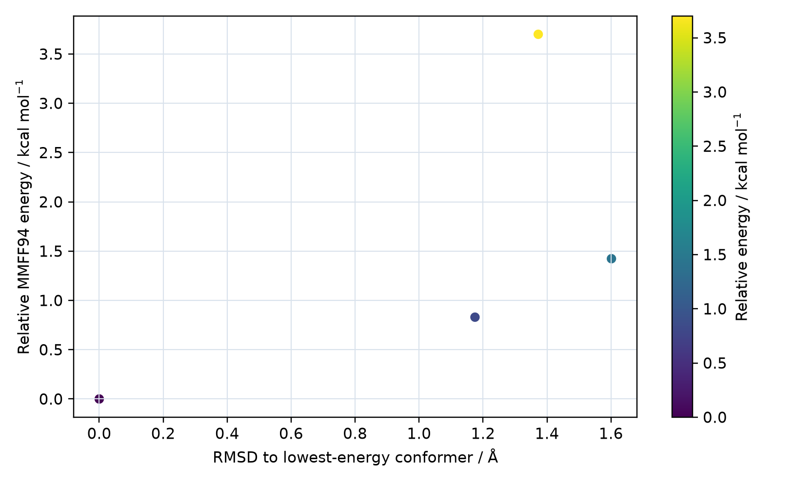
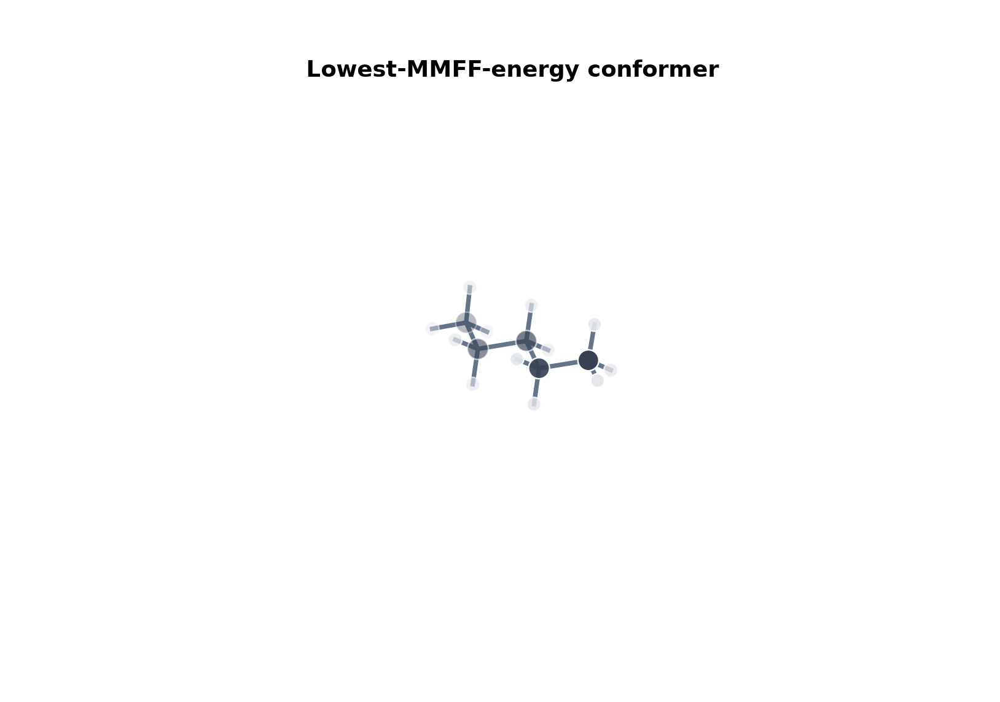

Molecular Representation and Classical Preparation
RDKit
Interpret SMILES as molecular graphs, create two-dimensional depictions, generate three-dimensional conformers, optimize them with classical force fields, and compare structures.
- Role
- Cheminformatics and classical preparation
- Typical input
- SMILES, SMARTS, SDF, MOL
- Typical output
- Mol objects, 2D/3D coordinates, SDF
1. Overview
The core workflow is SMILES -> Mol -> AddHs -> ETKDG -> MMFF/UFF -> clustering -> SDF. RDKit uses molecular graphs, empirical rules, and force fields; its force-field ranking is not a substitute for electronic energies.
Identifiers, fingerprints, charges, and SMARTS searching are covered in the cheminformatics track.
Because force-field energies and quantum-chemical electronic energies have different definitions, use RDKit primarily to prepare a diverse starting ensemble. Refine several low-energy, structurally distinct candidates at the electronic-structure level when relative energies matter.
2. SMILES and Mol objects
Branches, ring closures, aromatic atoms, formal charges, and stereochemistry are encoded in SMILES. Parsing normally performs sanitization and assigns valence, aromaticity, conjugation, and ring information.
from rdkit import Chem
mol = Chem.MolFromSmiles("C[C@H](O)C(=O)O")
if mol is None:
raise ValueError("SMILES parsing failed")
print(Chem.MolToSmiles(mol, isomericSmiles=True))SMILES preserves stereochemistry only when it is explicitly encoded. Before generating conformers, inspect unassigned tetrahedral centers and double-bond stereochemistry instead of allowing an embedding workflow to choose them silently.
3. Mol objects and sanitization
An RDKit Mol stores atoms, bonds, properties, and zero or more conformers. Parsing normally sanitizes valence, aromaticity, conjugation, hybridization, and ring information. A failed parse returns None; do not continue with an invalid object.
mol = Chem.MolFromSmiles(smiles)
if mol is None:
raise ValueError(f"Could not parse: {smiles}")
mol_h = Chem.AddHs(mol)
print(mol_h.GetNumAtoms(), mol_h.GetNumConformers())4. Two-dimensional depiction
Compute 2D coordinates before drawing and use atom or bond highlighting to communicate a specific substructure. Keep orientation consistent when comparing a molecular series.
from rdkit.Chem import AllChem, Draw
AllChem.Compute2DCoords(mol)
Draw.MolToFile(mol, "molecule.svg", size=(420, 280))5. ETKDG conformer generation
ETKDG combines distance geometry with experimental torsional preferences. Add explicit hydrogens, generate multiple conformers with a fixed random seed, and inspect embedding failures and stereochemistry.
from rdkit.Chem import AllChem
mol_h = Chem.AddHs(mol)
params = AllChem.ETKDGv3()
params.randomSeed = 2026
ids = AllChem.EmbedMultipleConfs(mol_h, numConfs=100, params=params)Embedding returns conformer identifiers; compare their count with the requested count and preserve the random seed. Pruning during embedding uses an RMS threshold, so record pruneRmsThresh if it is enabled.
6. MMFF and UFF
MMFF is commonly used for organic molecules when parameters are available; UFF covers a broader element range but still requires chemical validation. Record convergence and retain several low-energy, geometrically distinct conformers.
results = AllChem.MMFFOptimizeMoleculeConfs(
mol_h, numThreads=0, maxIters=1000, mmffVariant="MMFF94s"
)
# Each tuple is (not_converged, energy).
conformer_data = list(zip(ids, results))A status value of 0 indicates convergence. Check MMFFHasAllMoleculeParams before MMFF; use UFF only after confirming that its atom types are chemically sensible for the system.
7. RMSD and conformer selection
RMSD depends on atom mapping, alignment, symmetry handling, and whether hydrogens are included. Energy windows and RMSD clustering serve different purposes and are often combined.
from rdkit.ML.Cluster import Butina
rms = AllChem.GetConformerRMSMatrix(mol_h, prealigned=False)
clusters = Butina.ClusterData(
rms, len(ids), 0.75, isDistData=True, reordering=True
)An energy window removes high-energy structures, while RMSD clustering removes geometric redundancy. A reliable ensemble workflow normally uses both.
8. Complete preparation example
- Parse and validate the molecular graph.
- Assign or verify stereochemistry.
- Add explicit hydrogens.
- Generate many ETKDG conformers with a fixed seed.
- Optimize each conformer and record convergence.
- Apply an energy window and RMSD clustering.
- Write conformer ID, energy, and settings to SDF properties.
Reproducible Example
9. Calculated example: n-pentane conformers
ETKDGv3 requested 100 n-pentane conformers with a 0.15 Å generation-time RMSD pruning threshold, followed by MMFF94 optimization.
Loading 3D conformers...
Drag to rotate; use the mouse wheel or pinch gesture to zoom. 3Dmol.js 2.5.5


How to read these views
- The scatter x-axis is all-atom RMSD from the lowest-energy conformer; the y-axis is relative MMFF94 energy.
- Points at nearly identical energy and RMSD correspond to candidates that collapsed to essentially the same optimized geometry.
- MMFF94 is useful for preparation and screening, but its ranking is not a DFT ranking or a solution-phase population.
10. References
Last reviewed: August 4, 2026. Check the linked official documentation for syntax specific to the installed software version.